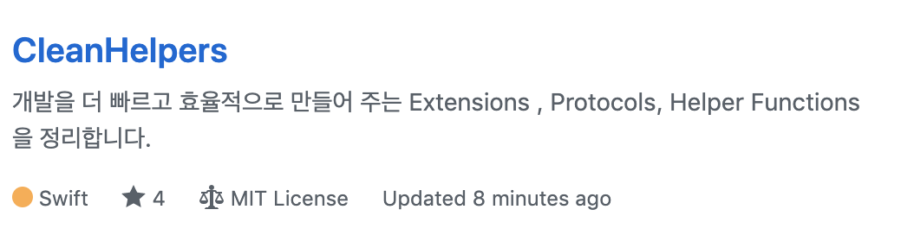
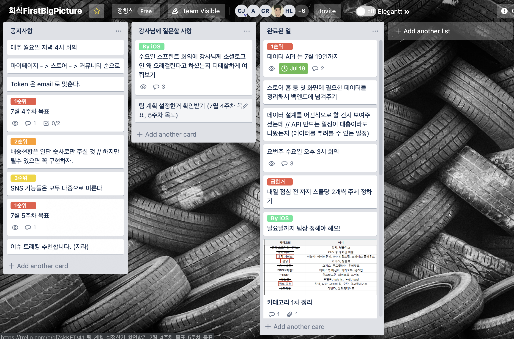

오늘의 집? 오늘의 팀!
"안녕하세요. 정창식 입니다."
Backend, Frontend, iOS까지 총 10명이 한 팀으로 구성하여 하나의 서비스를 프론트부터 서버까지 만들어 보는 프로젝트현재 매우 빠르게 성장중인 스타트업인 버킷플레이스가 서비스하고 있는 인테리어 플랫폼 `오늘의 집`을 클론한 프로젝트
- 기간 : 2019.07.01 ~ 2019.08.09 (5주)
- 역할 : 회식First팀 내 iOS개발팀 팀장.
Period
Design
Problem
OpenSource
설계
- 앱 플로우차트 설계 - AdobeXD
- 앱 명세서 작성 - Keynote
- 데이터 모델 설계 - 마인드맵
- API 설계 - Backend 개발자와 함께
플로우 차트 설계
AdobeXD로 구현한 앱 플로우 차트플로우 차트를 작성함으로써 얻은 것들
* 화면이 어디로 이동하는지 흐름
* 앱의 큰 그림
명세서 작성
플로우 차트를 바탕으로 화면 중심으로 디테일하게 작업한 명세서명세서를 작성함으로써 얻은 것들
* 화면에서 필요한 데이터들
* 화면에서 표현해야 하는 디테일한 UI 요소들
데이터 모델 설계
Backend 팀에게 데이터를 요청하기 위해 마인드맵으로 보기 쉽게 작성한 데이터 모델데이터 모델을 작성함으로써 얻은 것들
* Backend 팀을 효과적으로 설득할 수 있음.
* 프로젝트에서 데이터 모델을 구현할 때 쓰임.
RESTful API 설계
Backend팀과 함께 오늘의 집 API 설계API를 설계함으로써 얻은 것들
* 네트워킹 작업시 매끄럽게 작동
* 앱 내의 데이터 모델과 서버의 데이터 모델이 매우 유사해서 효율성 증가
문제와 해결
- 로그인이 되지 않으면 SNS 기능, 결제 기능등 서비스의 핵심 기능을 활성화 할 수 없는 만큼 가장 중요하다고 생각.
- 한번도 경험해보지 못한 Token이라는 개념을 사용해야 한다는 문제.
- 다른 팀들이 하지 않는 소셜로그인을 구현하는 것이기 떄문에 팀원들을 설득해야 하는 문제.
- 카카오, 구글, 네이버등 소셜 로그인은 회사마다 SDK가 모두 다르며 카카오와 네이버에서 제공하는 예제코드는 모두 옛날 버전안 문제
- 3사의 로그인 관련 SDK 문서를 탐독!
- 3사 모두 로그인 기능은 고유 id값을 제공한다는 것에 아이디어를 얻음!
- 서버 개발자와 협의를 통해 id를 오늘의 집 서버에 저장하고 Token을 발행하도록 구현해서 문제 해결
- 아래와 같이 오늘의 집 Custom UI가 여러 화면에서 적용해야 하는 문제가 발생.
- 구현한 CustomUI를 실제로 오픈소스로 확장시켜서 Github에 배포.
- 서버와 통신하는 메소드를 구현할 때는 Backend 팀이 작성헌 API 문서를 참고해 구현하게 되는데 해당 문서에 request content-type 은 application/json 으로 명시되어 있었음.
- 하지만 HTTP Response Status Code 500번 에러가 계속 발생!
- Content Type을 application/x-www-form-urlencoded로 변경해 주고
- x-www-form-urlencoded은 json의 key:value 와는 다르게 key-value&key=value와 같이 query문으로 body를 작성해야 하기 때문에
- query문으로 변환하는 메소드를 만든 후 적용한 후 문제 해결!
- `오늘의 집` 앱의 View 개수는 50개 이상으로 모든 팀의 프로젝트 중 가장 큰 규모.
- 프로젝트 기간 안에 완성하지 못할 가능성.
- 효율성을 높이지 않으면 안되는 상황.
- cell의 id를 필요로 하는 TableView 혹은 CollectionView를 대응하기 위해 Identifier 라는 Protocol을 구현해 Cell의 id를 자동으로 생성하게 함으로써 id를 지정하는 코드와 시간 단축!
- 결과적으로 cell 파일만 20개 이상이었기 때문에 효과적으로 효율성을 높일 수 있었음.
- 사용자에게 주의를 주는 alert를 extension을 통해 구현함으로써 재사용성을 높임.
- 이 노력들을 확장시켜서 유용한 extension과 helper method를 마인드맵으로 정리하는 CleanHelper 프로젝트 Github 배포.
- 
- 전체 팀 회의 때마다 Frontend, Backend, iOS 서로 어떤 일을 하는지 잘 모르기 때문에 회의 시간이 무의미해지고 의사소통에서 오해가 발생.
- iOS 팀원들 간에도 협업의 경험이 없기 때문에 분업을 하는 중에 의사소통 문제 발생.
- Github를 활용하여 프로젝트를 관리하기 때문에 Conflict를 최대한 방지하기 위해 원활한 의사소통이 매우 중요했음.
- Trello를 활용해서 Team의 공지사항과 방향성을 기록하는 Board와 서로 어떤일을 하고 있는지 기록하는 Board를 관리함으로써 해결!
- 
- 매일 점심 전 11시 30분에 30분간 코드리뷰를 진행하고 Commit Message 규칙을 정하는 노력을 통해 해결!
Language
Project
Activity
Visitor User